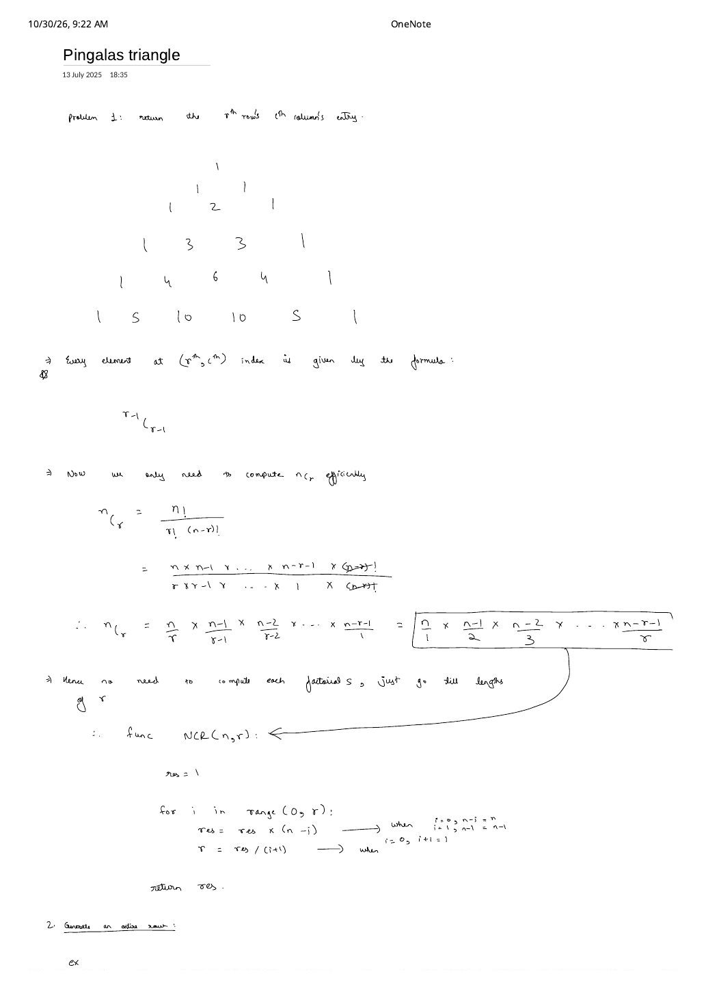
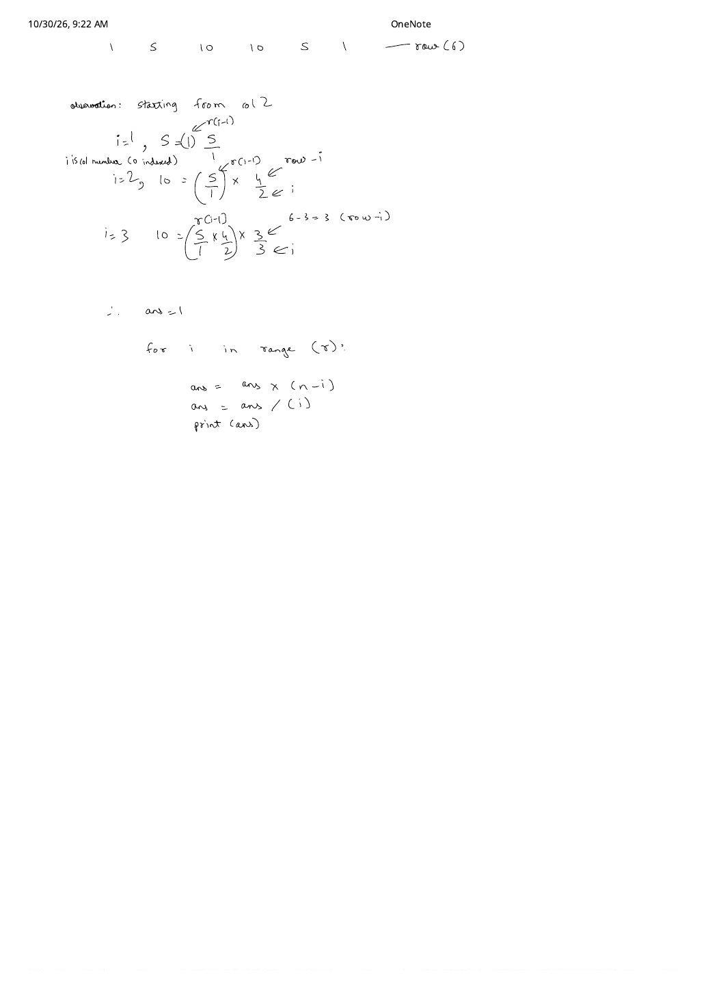

Pingala's (Pascal's) Triangle: $\mathcal{O}(r)$ Binomial Coefficients, $\mathcal{O}(N)$ Row Generation & LC 118 / 119
Expanded from handwritten competitive coding study note: 13_Pingalas_triangle.pdf (2 pages) · Jump to original scans
Nearly nineteen centuries before Blaise Pascal's 1654 Traité du triangle arithmétique, the ancient Sanskrit prosodist Āchārya Pingala introduced the Meru Prastāra ("Staircase of Mount Meru") in the Chandaḥśāstra (c. 3rd–2nd century BCE, elucidated by Halāyudha in the 10th century CE) to count $n$-syllable poetic metres containing $k$ guru (heavy) syllables. In coding interviews, Pingala's / Pascal's Triangle is almost always asked as one of three distinct sub-problems, each with its own optimal complexity target!
1. Sub-Problem 1: Return the Entry at $r$-th Row, $c$-th Column
Suppose the interviewer gives 1-based row $r$ and column $c$ and asks ONLY for that single entry. Generating $r$ rows of the triangle would cost $\mathcal{O}(r^2)$ time, whereas direct combinatorics gives:
1.1 Why Factorials Overflow & How $(n - k)!$ Cancellation Fixes Everything
Setting $n = r - 1$ and $k = c - 1$, naive evaluation computes $n!$, $k!$, and $(n - k)!$ separately in $\mathcal{O}(n) + \mathcal{O}(k) + \mathcal{O}(n - k)$ time — and Worse, $21! \approx 5.1 \times 10^{19}$ already overflows a signed 64-bit long long ($\max \approx 9.22 \times 10^{18}$), even when $\binom{21}{2} = 210$ fits inside a single byte!
Page 1 cancels $(n - k)!$ directly from numerator and denominator, leaving $k$ paired factors, and reverses the denominator $k \times (k - 1) \times \dots \times 1$ to $1 \times 2 \times \dots \times k$:
Why Reversing the Denominator to $1, 2, 3, \dots, k$ Guarantees Exact Integer Division!
If you tried dividing by $k$ first ($n / k$), integer division would truncate whenever $k \nmid n$ (e.g., $\binom{5}{2}$: $5 / 2 = 2$ in integer division!). By dividing in ascending order $1, 2, 3, \dots, k$ and multiplying before dividing at each step $i = 0 \dots k - 1$:
- After $i = 0$: $\text{res} = n / 1 = \binom{n}{1} \in \mathbb{Z}$.
- After $i = 1$: $\text{res} = \frac{n(n - 1)}{1 \cdot 2} = \binom{n}{2} \in \mathbb{Z}$ (one of any two consecutive integers is even).
- By induction, after step $i$, $\text{res}$ holds the exact binomial coefficient $\binom{n}{i + 1} \in \mathbb{Z}$ — zero remainder is ever lost! Also replace $k \gets \min(k, n - k)$ up front via $\binom{n}{k} = \binom{n}{n - k}$ to cut work to $\mathcal{O}(\min(k, n - k))$.
Quick Shorthand Clarifications When Reading the Scans
1. On Page 1, the formula under the triangle was jotted as (r-1)C(r-1) (which always equals $1$!) — read it as (r-1)C(c-1) for row $r$, column $c$. Similarly, the algebraic numerator's last term was written n - r - 1 instead of $n - (r - 1) = n - r + 1$, and inside NCR(n, r) the line r = res / (i + 1) meant res = res / (i + 1) (updating res, not overwriting loop bound r!).
2. On Page 2's row-generation loop, starting index $i$ at $0$ would divide by $0$ on ans = ans / i — push the initial ans = 1 first, then iterate for (int i = 1; i < row; ++i)!
2. Sub-Problem 2: Generate the Entire $N$-th Row in $\mathcal{O}(N)$ Time (LeetCode 119)
Calling nCr(N - 1, c) independently across all $N$ columns of row $N$ costs $\sum_{c=0}^{N-1} \min(c, N - 1 - c) = \Theta(N^2)$ time. Page 2 eliminates that inner loop by inspecting 1-indexed Row $N = 6$ ([1, 5, 10, 10, 5, 1], with 0-indexed column $i \in [0, 5]$) and factoring each column out of the column right before it:
Page 2's Factor-Chain Derivation on Row $N = 6$ ([1, 5, 10, 10, 5, 1])
• $i = 0$: $\text{ans} = \mathbf{1}$• $i = 1$: $\text{ans} = 1 \times \frac{6 - 1}{1} = 1 \times \frac{5}{1} = \mathbf{5}$
• $i = 2$: $\text{ans} = \left(\frac{5}{1}\right) \times \frac{6 - 2}{2} = 5 \times \frac{4}{2} = \mathbf{10}$
• $i = 3$: $\text{ans} = \left(\frac{5 \times 4}{1 \times 2}\right) \times \frac{6 - 3}{3} = 10 \times \frac{3}{3} = \mathbf{10}$
• $i = 4$: $\text{ans} = 10 \times \frac{6 - 4}{4} = 10 \times \frac{2}{4} = \mathbf{5}$ · $i = 5$: $\text{ans} = 5 \times \frac{6 - 5}{5} = \mathbf{1}$.
In general, for 1-indexed row $N$ (or LeetCode 119's 0-indexed rowIndex $R = N - 1$), column $i$ ($1 \le i \le N - 1$) follows in $\mathcal{O}(1)$ arithmetic from column $i - 1$:
Total runtime drops from $\mathcal{O}(N^2)$ to $\mathcal{O}(N)$ time and $\mathcal{O}(1)$ auxiliary space!
3. Sub-Problem 3: Generate the First $N$ Rows (LeetCode 118)
To construct the entire $N$-row triangle (which contains $1 + 2 + \dots + N = \frac{N(N + 1)}{2} = \Theta(N^2)$ numbers, so $\Omega(N^2)$ is a hard output-size lower bound):
- Naive
nCrper cell: $\mathcal{O}(N^3)$ time. - Optimal A — Repeated $\mathcal{O}(r)$ Multiplicative Row Generator: Call Sub-Problem 2 for each row $r = 1 \dots N$ in $\sum_{r=1}^{N} \mathcal{O}(r) = \mathcal{O}(N^2)$ time.
- Optimal B — Pingala's Additive DP Identity: Set row boundaries
tri[R][0] = tri[R][R] = 1and compute interior cells viatri[R][C] = tri[R - 1][C - 1] + tri[R - 1][C]in $\mathcal{O}(N^2)$ additions (with zero risk of intermediate multiplication overflow!).
4. Clean C++ Reference Implementations
#include <bits/stdc++.h>
using namespace std;
// Sub-Problem 1: Entry at 1-indexed (r, c) = C(r - 1, c - 1)
// Time: O(min(c, r - c)), Extra Space: O(1)
long long pingalaElement(int r, int c) {
int n = r - 1;
int k = min(c - 1, n - (c - 1));
long long res = 1;
for (int i = 0; i < k; ++i) {
res = res * (n - i) / (i + 1); // multiply BEFORE dividing!
}
return res;
}
// Sub-Problem 2 (LeetCode 119): Return 0-indexed rowIndex R (i.e. (R + 1)-th row)
// Time: O(R), Extra Space: O(1) beyond output vector
vector<int> getRow(int rowIndex) {
vector<int> row(rowIndex + 1, 1);
long long ans = 1;
int N = rowIndex + 1; // 1-indexed row number matching Page 2's (N - i) / i
for (int i = 1; i < N; ++i) {
ans = ans * (N - i) / i;
row[i] = (int)ans;
}
return row;
}
// Sub-Problem 3 (LeetCode 118): Generate first numRows of Pingala's / Pascal's Triangle
// Time: O(numRows^2), Extra Space: O(1) beyond output 2D vector
vector<vector<int>> generate(int numRows) {
vector<vector<int>> tri(numRows);
for (int r = 0; r < numRows; ++r) {
tri[r].assign(r + 1, 1);
for (int c = 1; c < r; ++c) {
tri[r][c] = tri[r - 1][c - 1] + tri[r - 1][c];
}
}
return tri;
}5. Complexity Summary & Key Edge Cases
| Sub-Problem | Naive Approach | Optimal Time | Extra Space |
|---|---|---|---|
| 1. Single Entry at $(r, c)$ | Build triangle: $\mathcal{O}(r^2)$, or 3 factorials (overflows!) | $\mathcal{O}(\min(c, r - c))$ | $\mathcal{O}(1)$ |
| 2. Entire $N$-th Row (LC 119) | Call nCr $N$ times: $\mathcal{O}(N^2)$ | $\mathcal{O}(N)$ | $\mathcal{O}(1)$ aux |
| 3. First $N$ Rows (LC 118) | Call nCr per cell: $\mathcal{O}(N^3)$ | $\mathcal{O}(N^2)$ | $\mathcal{O}(1)$ aux |
- 0-Indexed vs. 1-Indexed Trap: LeetCode 119 passes
rowIndex = 3expecting[1, 3, 3, 1]($4$ elements, which is $r = 4$ in 1-based numbering!), whereas LeetCode 118 passesnumRows = 5expecting rows $r = 1 \dots 5$. Always verify whether the prompt is 0-indexed or 1-indexed before writing $n = r - 1$! - Intermediate 64-bit Product in Row 33 (LC 119 max constraint $R = 33$): At $R = 33$, $\binom{33}{16} = 1{,}166{,}803{,}110$ fits in 32-bit
int, but multiplying $\binom{33}{16} \times 17 \approx 1.98 \times 10^{10}$ before dividing by $17$ overflows 32-bitint! Always keep accumulatorlong long ansin 64-bit during the multiplication step.
From the Handwritten Notes
View original handwritten page — Page 1: Triangle Layout, $\binom{r-1}{c-1}$ Formula & $\mathcal{O}(r)$ NCR(n, r)


13_Pingalas_triangle.pdf p. 1: Rows 1–6 of Pingala's Triangle, Sub-Problem 1 reduction to $\binom{r-1}{c-1}$, cancelling $(n - r)!$, and iterative NCR(n, r) loop.View original handwritten page — Page 2: Row 6 Factor-Chain Derivation & $\mathcal{O}(n)$ Row Generator


13_Pingalas_triangle.pdf p. 2: Factoring Row 6 (1, 5, 10, 10, 5, 1) column-by-column via $\text{ans} = \text{ans} \times (\text{row} - i) / i$ to generate any row in $\mathcal{O}(n)$ time.